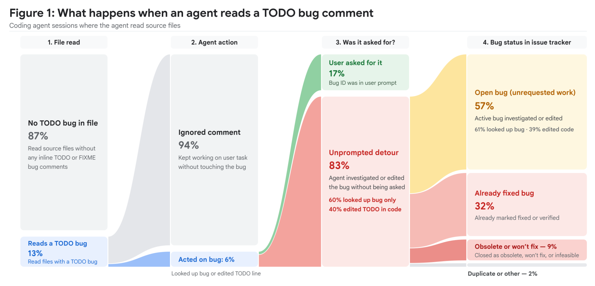
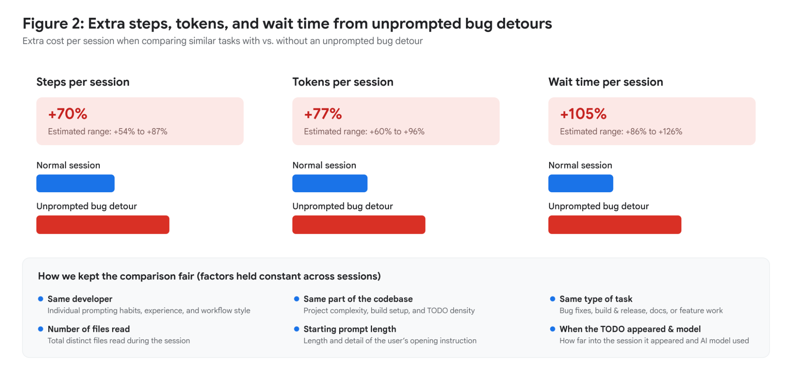
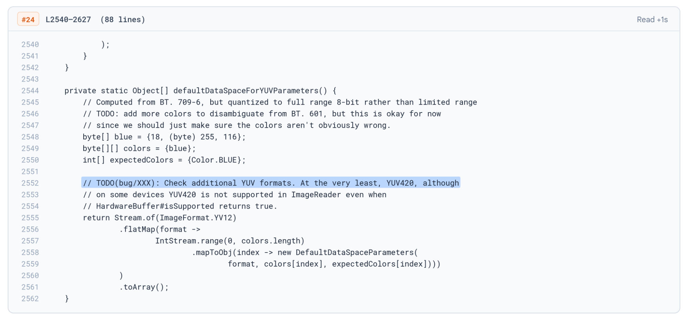
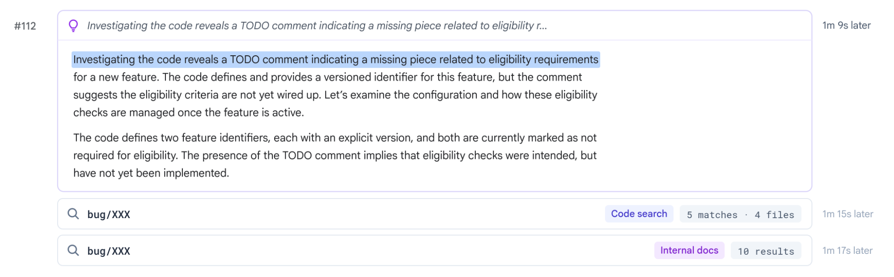
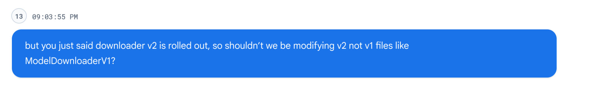
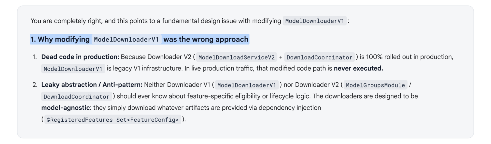

智能体分心：如何解决编码 AI 的上下文偏离难题
Agent Distraction
发布日期： 2026年11月6日
作者：
* Sam Saccone (Senior Staff Software Engineer)
* Madhuri Garikapati (Senior Staff Data Scientist)
分类： AI, Problem-Solving, Learn
Published: November 6, 2026
Authors: * Sam Saccone (Senior Staff Software Engineer) * Madhuri Garikapati (Senior Staff Data Scientist)
Categories: AI, Problem-Solving, Learn
文章背景与核心概要
在日常软件开发中，人类工程师往往会下意识略过代码中陈旧的注释与历史待办项；然而，对于被赋予工具调用与自主权能的 AI 编码智能体 (AI Coding Agent) 而言，这些残留在代码库中的 TODO 和过期缺陷标记，却经常被误当成不容忽视的“最高行动指令”。来自顶级工程团队的 Sam Saccone 与 Madhuri Garikapati 基于数千名工程师、上亿次智能体执行步骤的大规模实证追踪，首次系统量化了这种“智能体分心”现象带来的巨大代价。研究发现，高达 13% 的智能体执行会遭遇遗留注释，而在触发后续动作的场景中，超 80% 均属于未经人类提示的无端偏航，甚至导致执行步骤激增 70%、Token 消耗暴涨 77%。为此，团队构建了跨越代码历史全生命周期的自动化清理智能体，成功清除了数千个陈旧死链接并达到 95% 以上的人工合并采纳率，为构建“智能体友好型代码库”树立了全新标杆。
核心概要
Executive Summary
人类程序员在浏览代码时，往往能一眼看穿并随手略过那些陈年旧账；但对 AI 编码智能体 (AI Coding Agent) 而言，这些杂乱无章的注释却极易被解读为不可违抗的“行动号召”。随着智能体借助各种工具与技能拥有越来越高的自主权，它们陷入偏离主线的“支线任务”的概率也随之水涨船高。散落在代码注释中的过时技术规范、早已修复的历史缺陷以及滞后的陈旧文档，正在暗中误导这批新型数字化员工，不仅白白耗费昂贵的 Token、执行步骤和时间，更严重时还会让智能体依据虚假陈旧的前提做出错误的架构与逻辑决策。本文以代码中内联的 TODO(bug/...) 注释为突破口，深入剖析了智能体分心现象背后的真实量化成本，并提出了一套自动化维护整洁代码库的实效方案。
What humans easily skim past in code, AI coding agents treat as direct calls to action. As coding agents gain more autonomy through tools and skills, the potential for off-track side-quests scales proportionally. Obsolete specs, resolved bugs, and lagging documentation found in codebase comments indirectly misdirect agents, costing valuable tokens, steps, and time while occasionally grounding the agent on falsehoods. By using inline
TODO(bug/...)comments as a proxy, this article explores the quantifiable costs of agent distraction and outlines automated solutions for maintaining distraction-free codebases.
对于人类工程师来说，代码里很多无关痛痒的杂音只需一扫而过；然而 AI 智能体 (AI Agent) 却缺乏这种经验直觉，往往将其视作直接的任务指令。在编码任务的规划与调研阶段，智能体在读取文件时，会饥不择食地抓住代码库中散落的一切线索，进而迷失在陈旧信息的泥潭中。
What is easy for humans to skim past in code, agents see as a call to action. They do not know better, latching on to that which is littered across the files read during the planning and research phase of the coding journey.
随着智能体通过外接工具和扩展技能拥有了越来越强的自主行动能力，它们误入“支线冒险”的几率也呈比例同步飙升。过时的技术规格说明、早已尘埃落定的陈年缺陷以及严重滞后的开发文档，本应静静沉睡在代码库被遗忘的角落，如今却作为上下文被智能体全盘无心摄入，暗中误导了这群正在接管开发流程的新一代“编程员工”。这种上下文误导代价高昂：最好的情况也只是浪费了宝贵的 Token、执行步骤和漫长的人工等待时间；而在最糟糕的情况下，它会以错误陈旧的信息作为认知锚点，导致智能体在实际实现代码时做出灾难性的逻辑判断和错误决策。
As agents' agency through tools and skills grows the ability for side-quests scales proportionally. Obsolete specs, long resolved bugs, and lagging documentation no longer rest in long forgotten corners of the codebase, but rather are unintentionally ingested as context indirecting and misdirecting the next wave of coders - the agents. This indirection is not free: in the best case it only costs tokens, steps, and time - in the worst case it distracts and grounds the agent on falsehoods leading to incorrect logic and decisions during implementation.
在每月数以百万计的智能体执行会话中，要仅凭人工审查去统计智能体究竟掉进过多少次此类陷阱，完全是不切实际的——我们需要一种能够直接从代码本身提取的客观信号。而代码中内联的 TODO(bug/...) 注释恰好提供了极具代表性的观测标尺。现实中，哪怕底层的缺陷早已被修复或废弃，对应的 TODO 注释往往依然长久遗留在代码中；与此同时，注释中关联的缺陷工单系统则完整记录着真实的生命周期状态。通过将智能体遇到的每一个 TODO 注释与工单系统的最新状态以及开发者最初输入的提示词进行交叉比对，我们便能在超大规模下自动区分哪些是合情合理的必要工作，哪些纯粹是南辕北辙的无端偏航。
Measuring how often agents fall into these traps across millions of monthly sessions is impossible with manual human review - we need an objective signal derivable from the code itself. Inline
TODO(bug/...)comments provide the perfect proxy. TODOs tend to be left behind long after the underlying bug is resolved or abandoned, while the linked bug ticket acts as the canonical record. By cross-referencing every TODO an agent encounters against the TODO's bug status and the user's prompt, we can automatically separate valid work from wasted detours at scale.
真实代价：数据量化分心带来的资源黑洞
The Cost
通过深度分析跨越数千名工程师、涵盖数亿次独立智能体执行步骤的分布式交互链路追踪数据，我们得以清晰量化代码库中 TODO 干扰项所带来的深远冲击，以及智能体在遭遇这些干扰时的真实行为模式：
By leveraging the distributed traces of agent interactions across thousands of engineers and over hundreds of millions of individual agent steps, we quantify the impact of TODO distractions in the codebase and how agents act on them:

- 近七分之一的执行会话暴露在干扰中 (13%)： 在数百万次涉及文件读取的会话中，有 13% 的会话让智能体在上下文中接触到了内联的
TODO(bug/...)或FIXME(bug/...)缺陷引用标记。 - 6% 会触发后续次级动作——且其中 83% 毫无人类指令指示： 尽管智能体在 94% 的偶遇场景下能够忽略这些注释，但在 6% 的情况下，智能体会针对该缺陷 ID 采取后续探索行动。更惊人的是，在这些行动中，超过五分之四 (83%) 完全没有经过人类开发者的提示要求——人类压根没让它去处理这个缺陷。
- 41% 陷入死胡同追逐已关闭工单，57% 引发任务范围蔓延 (Scope Creep)： 将这些无端偏航的动作与工单系统的实时状态进行比对，揭示了两种截然不同的失败模式：
- 超过五分之二的无端偏航是在追逐已经关闭的工单——其中 32% 是早已修复并通过验证的历史缺陷，9% 是作废无须修复的废弃死胡同，另有 2% 撞上了重复或受权限限制的工单。
- 在超过一半的无端偏航中，工单虽仍处于开启状态（
NEW新建 /ASSIGNED已指派 /ACCEPTED已受理），但智能体却自作主张扩大工作范围（61% 仅进行了盲目查询，39% 甚至直接修改了代码），私自调查或改动了一个人类开发者从未授权碰触的问题。
- Nearly 1 in 7 sessions are exposed (13%): Of the millions of file-reading sessions, 13% of sessions exposed the agent to inline
TODO(bug/...)orFIXME(bug/...)bug references.- 6% trigger secondary action—and 83% of those are unprompted: While agents ignored the comment in 94% of encounters, in 6% the agent took subsequent action targeting that bug ID. Over 4 in 5 of those actions (83% sessions) were completely unprompted—the developer didn’t ask for the bug.
- 41% chase closed dead ends, 57% trigger scope creep: Cross-referencing the unprompted detours against live bug status exposes two distinct failure modes:
- Over two-fifths of unprompted detours chased tickets that were already closed—split between already fixed/verified bugs (32%) and obsolete/won't-fix dead ends (9%), with an additional 2% hitting duplicate or restricted tickets.
- In over half of unprompted detours, the bug was still open (
NEW/ASSIGNED/ACCEPTED), and the agent expanded its work (61% lookup only; 39% edited code) to investigate or modify an issue the developer never asked to touch.

在严格控制了开发者个体差异、代码库复杂度、任务类型、模型能力层级、读取文件数量、初始提示词长度以及缺陷引用在会话中出现的具体步数等变量后，通过基于开发者集群标准误差的多向固定效应回归分析，我们发现这种未受指示的缺陷偏航带来了极其惊人的额外系统开销（均在 \(p < 0.0001\) 显著水平下呈现高度统计学显著性）。平均而言，每个发生偏航的会话均产生了以下额外损耗：
Controlling for developer, codebase complexity, task type, model tier, number of files read, initial prompt length, and the step where the bug reference appeared, using a multi-way fixed-effects regression with developer-clustered standard errors, we see that unprompted bug detours add substantial overhead (all stat sig \(p < 0.0001\)). Per session:
- 执行步骤增加 70%
- Token 消耗增加 77%
- 等待时间增加 105%
- 70% more steps
- 77% more tokens
- 105% more wait time
真实案例：分心偏航是如何一步步发生的
How this plays out
案例一：追逐过时幽灵的偏航 (The Obsolete Detour)： 在接下来的执行轨迹中，我们可以直观看到这种注意力漂移是如何展开的。在调查一个完全不相关的缺陷时，智能体查阅了测试文件 SurfaceControlTest.java，无意中看到了注释 // TODO(bug/XXX)。
The Obsolete Detour: In the following trajectory we can observe how this drift plays out. During an investigation into an unrelated bug The agent views
SurfaceControlTest.javaand sees// TODO(bug/XXX)

尽管这个缺陷早在 2023 年就已经被彻底修复，但这条注释却一直滞留在代码库中。结果，智能体在后续的连续多个执行步骤中彻底分心，耗费大量资源深挖该缺陷以试图了解更多背景信息。
This bug, while fixed in 2023, remains lingering in the codebase leading to subsequent investigation distraction across Steps with the agent digging into the bug to learn more.
案例二：“过于积极”的越权智能体 (The Eager Agent)： 在另一条执行轨迹中，智能体在排查问题时偶然遇到了代码中的一个 TODO 注释，随后在没有任何人类提示的情况下，自作主张决定顺手把这段代码“修好”。
The Eager Agent: In the trajectory the agent encountered a TODO in the bug it was investigating and decided (unprompted) to "fix" the code

为了解决这个横外生枝的问题，智能体执行了多次代码搜索 (Code Search) 和内部知识库检索查询，最终擅自修改了 ModelDownloaderV1 模块的代码。随后在交互轨迹中，人类工程师发现了这一擅自越界行为并提出了严厉质问。
The agent executed multiple Code Search and internal knowledge search queries for the bug ultimately resulting in the agent changing the
ModelDownloaderV1code. Later in the trajectory the human challenged the scope creep.

而大语言模型在被当场指出后，才承认这确实属于不当的范围蔓延行为：
With the model when admitting it was an incorrect increase in scope:

尽管在这两个案例中，偏航看似只属于微小的分支插曲，但它们却是实打实的代码分心陷阱，无端耗费了时间、Token 以及人类宝贵的介入审查精力。
While in both of these cases they were only trivial to minor detours - they were real distractions costing time, tokens, and human intervention.
应对之道：大规模消除干扰的自动化实践
What we did
为了在大规模生产环境中彻底解决这一难题，我们构建了专门的清理智能体，对整个代码库展开地毯式清洗，全面排查代码中所有被工单系统标记为“已修复”或“已作废”的缺陷引用。然而，仅仅做到这一步还远远不足以判断这些代码中的 TODO 是否具备“承重”属性（即是否暗含核心设计意图）。清理智能体必须更进一步，深入挖掘缺陷的历史轨迹、文件修改日志以及代码库多年来的演进脉络。只有当智能体能够百分之百确认该 TODO 及其背后的原始意图确实已经彻底过时并失去意义时，才会自动生成代码变更并提交人工审查以从代码库中安全移除。得益于这种严密的多层次验证机制，我们的自动化 TODO 清理器在过去 6 个月内成功清除了数千个已然失效的陈旧引用，且人类审查者的代码合并采纳率超过了惊人的 95%。
As part of addressing this finding at scale we created agents that scrubbed the totality of our codebases, finding bug references in the code that were marked as fixed or obsolete for cleanup. That step alone however was not enough to determine if the TODOs in the codebase were load-bearing or not. The agents had to go further looking at the history of the bug, the file, and changes to the codebase, at times spanning years of history. Only in cases where the agent was able to confirm that the TODO and the intent behind the TODO was obsolete did our agent send a change for review to delete it from the codebase. As a result of this multi-layer approach, our todo cleaner has been able to remove thousands of actually obsolete references over the last 6 months exceeding 95% acceptance from human reviewers.
分心的重量：重塑对“智能体友好型代码库”的认知
The weight of distraction
总而言之，当我们把越来越复杂、更具挑战性的工程难题托付给智能体时，所谓的“智能体友好型代码库”绝不仅仅意味着核心执行热点路径 (Hotpath) 上的代码保持健康。那些长期被遗忘在冷僻角落的技术死角与陈年负债，如今正前所未有地成为向 AI 智能体征收的沉重“认知税”。
In recap, as we task agents on more and more ambitious problems, "agent friendly codebases" require more than just the code in the hotpath being healthy. The forgotten corners of the codebase now more than ever carry a significant tax levied against agents.
借助提交前静态分析工具 (Presubmit Analyzers)、全量代码库语料扫描器以及能够自动修复和清理失效待办项的编程智能体，我们完全拥有开箱即用且易于扩展的系统化解法，能够有效免除这一沉重的“认知税”，为智能体营造一个更加健康、杜绝干扰的理想生长环境。
Tooling like presubmit analyzers, entire corpus scanners, and automated coding agents to remediate dead-todos offer out of the box ready to scale solutions to address the tax enabling a healthier and distraction free codebase for agents to thrive.
那些曾经因为“优先级低、商业回报不明显”而被无限期搁置的代码债务清理项目，在全新一代智能体大规模入驻和操作代码库的今天，亟需被技术团队重新审视并置于核心日程之上。
Projects that once were on the backburner to cleanup lingering debt but deprioritized due to perceived low value need to be reevaluated with the new agents acting at scale on your codebase.